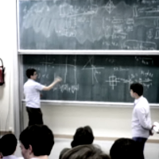
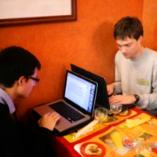

Editions Précédentes  Annales et solutions proposées Annales 2015 Annales 2014 Annales 2013 Annales 2012 Annales 2011 Résultats Edition 2015 Edition 2014 Edition 2013 Edition 2012 Edition 2011  Témoignages